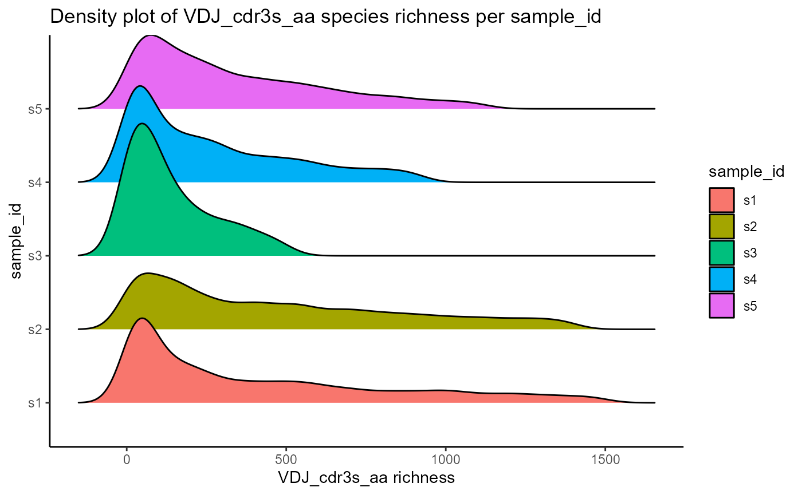
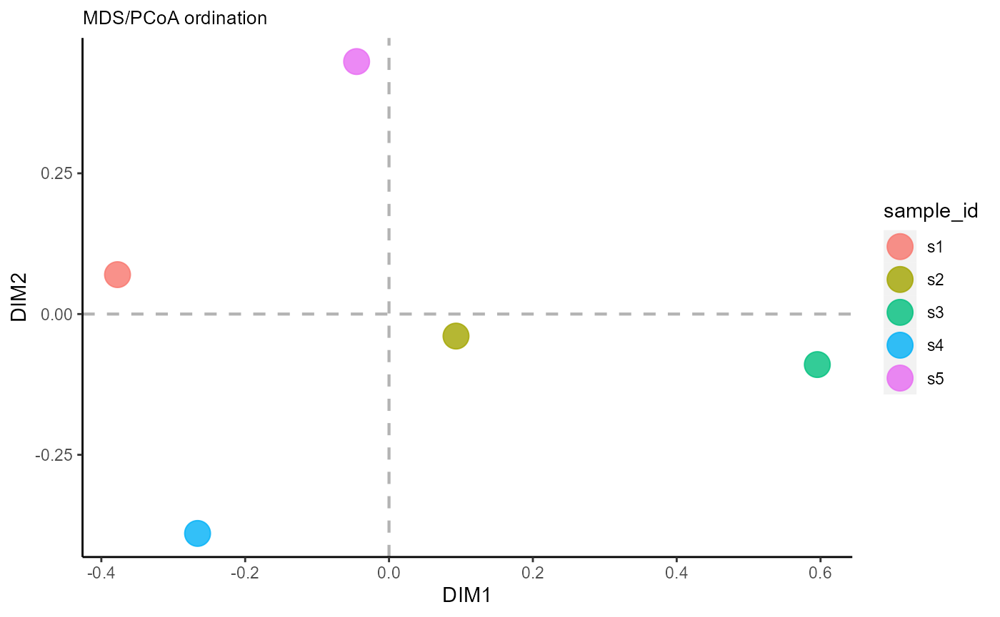
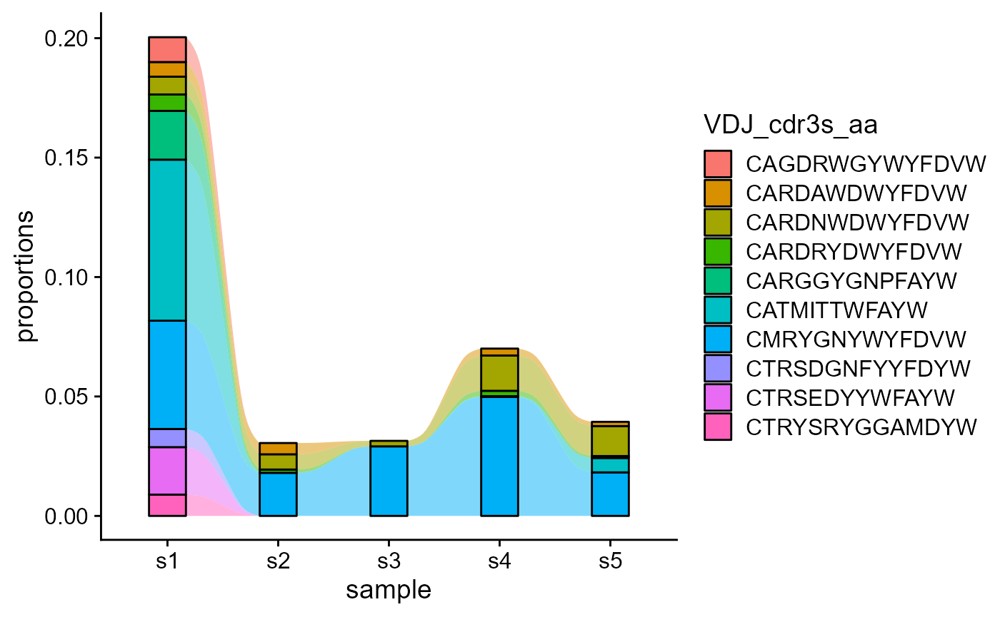
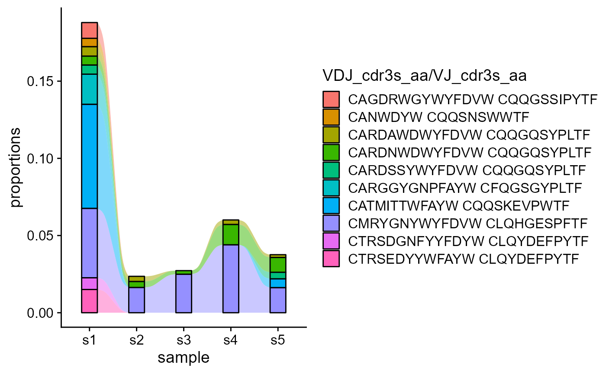
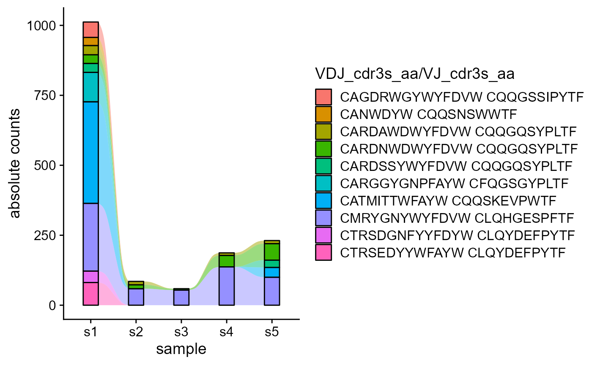
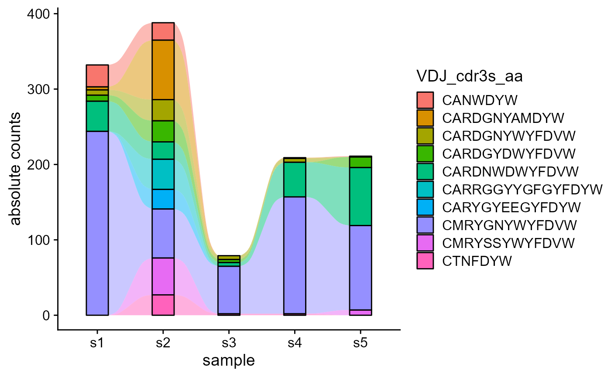
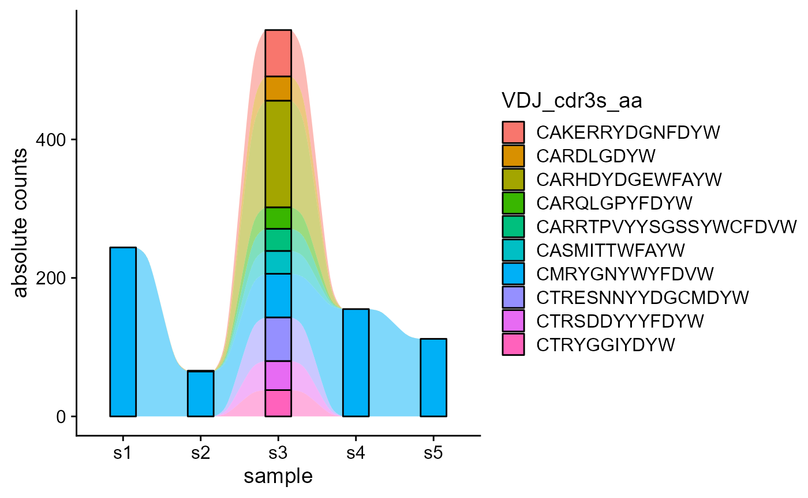
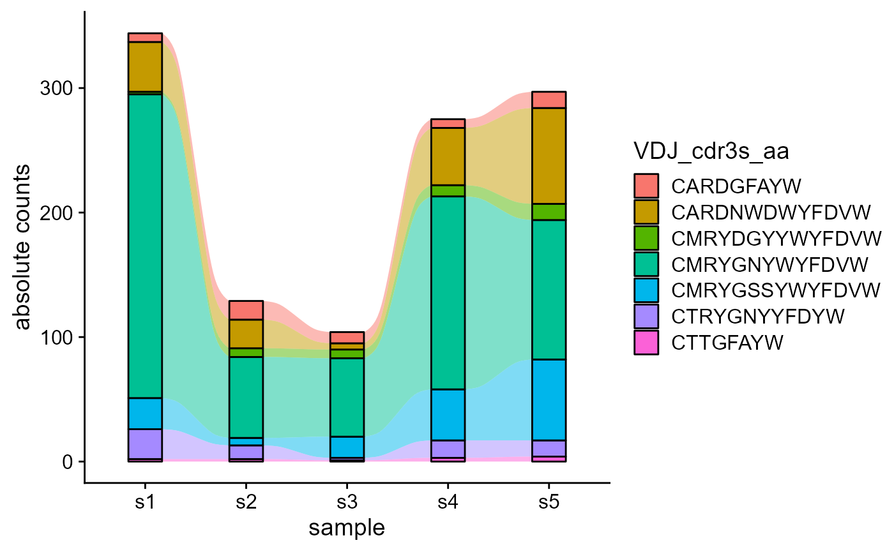
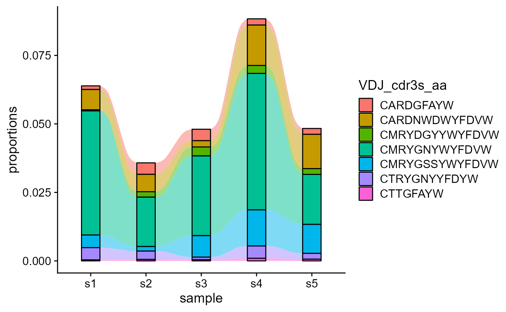
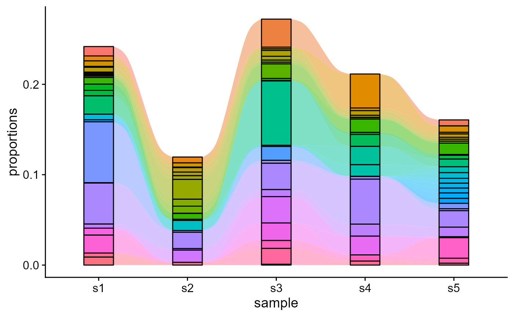

vignettes/Dynamics.Rmd
Dynamics.RmdThe Platypus family of packages are meant to provide potential pipelines and examples relevant to the broad field of computational immunology. The core set of functions can be found at https://github.com/alexyermanos/Platypus and examples of use can be found in the publications https://doi.org/10.1093/nargab/lqab023 and insert biorxiv database manuscript here
Stay tuned for updates https://twitter.com/AlexYermanos
The Platypus ecosystem includes functions for longitudinal repertoire analyses, with flexible wrappers allowing the tracking and visualization of different VDJ or GEX-specific features present as columns in the VDJ matrix. We will first look at basic analyses for CDRH3 richness across multiple timepoints, methods to cluster repertoire timepoints together, and tracking of specific features from a starting point repertoire. Despite not being exemplified on such, these functions can easily be used on a longitudinal dataset.
The output of the VDJ_GEX_matrix is the main object for all downstream functions in Platypus. We can create this directly into the R session by using the public data available on PlatypusDB. We will use the VDJ data of bone marrow plasma cells from five mice that were immunized with OVA (and the MPLA adjuvant) from Neumeier^, Yermanos^ et al 2022 PNAS. Despite not being a longitudinal dataset, it can still serve as a proxy for the clonotype/feature dynamics analyses, especially due to its number of public CDR3s.
library(Platypus)
PlatypusDB_fetch(PlatypusDB.links = c("neumeier2021b//VDJmatrix"),
load.to.enviroment = T, combine.objects = F)## 2022-08-08 08:11:40: Starting download of neumeier2021b__VDJmatrix.RData...## [1] "neumeier2021b__VDJmatrix"
VDJ <- neumeier2021b__VDJmatrix[[1]]In this analysis, we will focus on tracking CDRH3 sequences across our samples. We will first visualize the CDRH3 species richness across our samples (for different timepoints) using VDJ_abundances.
VDJ %>% VDJ_abundances(feature.columns = 'VDJ_cdr3s_aa',
grouping.column = 'sample_id',
sample.column = 'none',
output.format = 'density.ridges')## [[1]]## Picking joint bandwidth of 50.6 ## 4 Embed samples/groups via VDJ_ordination:
This is useful for visualizing CDRH3 differences across multiple samples and identify similar timepoints.
VDJ_ordination(VDJ,
feature.columns = 'VDJ_cdr3s_aa',
grouping.column = 'sample_id',
method = 'mds',
reduction.level = 'groups')
The main function for longitudinal single-cell immune repertoire analyses is VDJ_dynamics. This is a flexible wrapper for the VDJ_abundances function - it gets the cell counts for the features denoted in the columns.to.track parameter, tracked across the repertoire-identifier column in the timepoints.column parameter.
We can track the most abundant features from a starting point repertoire via the starting.point.repertoire parameter. The maximum elements (unique CDRH3 sequences) to be tracked is set via the max.elements.to.track parameter.
VDJ_dynamics(VDJ,
columns.to.track = 'VDJ_cdr3s_aa',
timepoints.column = 'sample_id',
starting.point.repertoire = 's1',
max.elements.to.track = 10)
We can also track combined features across combined groups: e.g., VDJ_cdr3s_aa and VJ_cdr3s_aa across samples.
VDJ_dynamics(VDJ,
columns.to.track = c('VDJ_cdr3s_aa', 'VJ_cdr3s_aa'),
timepoints.column = 'sample_id',
starting.point.repertoire = 's1',
max.elements.to.track = 10)
To get the absolute counts instead of per-repertoire proportions (proportions.level = ‘repertoire’), we can set proportions.level to ‘absolute.counts’.
VDJ_dynamics(VDJ,
columns.to.track = c('VDJ_cdr3s_aa', 'VJ_cdr3s_aa'),
timepoints.column = 'sample_id',
starting.point.repertoire = 's1',
max.elements.to.track = 10,
proportions.level = 'absolute.counts')
We are also showcasing the difference when changing the starting point repertoire for feature tracking.
p1 <- VDJ_dynamics(VDJ,
columns.to.track = c('VDJ_cdr3s_aa'),
timepoints.column = 'sample_id',
starting.point.repertoire = 's2',
max.elements.to.track = 10,
proportions.level = 'absolute.counts')
p2 <- VDJ_dynamics(VDJ,
columns.to.track = c('VDJ_cdr3s_aa'),
timepoints.column = 'sample_id',
starting.point.repertoire = 's3',
max.elements.to.track = 10,
proportions.level = 'absolute.counts')
p1
p2
Nonetheless, we can track only the common features across all repertoires, by setting track.only.common to TRUE.
VDJ_dynamics(VDJ,
columns.to.track = c('VDJ_cdr3s_aa'),
timepoints.column = 'sample_id',
proportions.level = 'absolute.counts',
track.only.common = T)
VDJ_dynamics(VDJ,
columns.to.track = c('VDJ_cdr3s_aa'),
timepoints.column = 'sample_id',
track.only.common = T)
For tracking the 100 most abundant CDR3, we will set track.all.elements to T and max.elements.to.track to 100. We will also not show the legend.
VDJ_dynamics(VDJ,
columns.to.track = c('VDJ_cdr3s_aa'),
timepoints.column = 'sample_id',
max.elements.to.track = 50,
track.all.elements = T,
starting.point.repertoire = NULL,
ignore.legend = T)
## R version 4.2.1 (2022-06-23 ucrt)
## Platform: x86_64-w64-mingw32/x64 (64-bit)
## Running under: Windows 10 x64 (build 19044)
##
## Matrix products: default
##
## locale:
## [1] LC_COLLATE=German_Germany.utf8 LC_CTYPE=German_Germany.utf8
## [3] LC_MONETARY=German_Germany.utf8 LC_NUMERIC=C
## [5] LC_TIME=German_Germany.utf8
##
## attached base packages:
## [1] stats graphics grDevices utils datasets methods base
##
## other attached packages:
## [1] Platypus_3.4.1 dplyr_1.0.9
##
## loaded via a namespace (and not attached):
## [1] Rcpp_1.0.9 ape_5.6-2 lattice_0.20-45 tidyr_1.2.0
## [5] assertthat_0.2.1 rprojroot_2.0.3 digest_0.6.29 utf8_1.2.2
## [9] R6_2.5.1 plyr_1.8.7 ggridges_0.5.3 ggalluvial_0.12.3
## [13] evaluate_0.15 ggplot2_3.3.6 highr_0.9 pillar_1.8.0
## [17] ggfun_0.0.6 yulab.utils_0.0.5 rlang_1.0.4 lazyeval_0.2.2
## [21] rstudioapi_0.13 vegan_2.6-2 jquerylib_0.1.4 Matrix_1.4-1
## [25] rmarkdown_2.14 pkgdown_2.0.6 splines_4.2.1 textshaping_0.3.6
## [29] desc_1.4.1 labeling_0.4.2 stringr_1.4.0 munsell_0.5.0
## [33] compiler_4.2.1 xfun_0.31 pkgconfig_2.0.3 systemfonts_1.0.4
## [37] gridGraphics_0.5-1 mgcv_1.8-40 htmltools_0.5.3 tidyselect_1.1.2
## [41] tibble_3.1.8 permute_0.9-7 fansi_1.0.3 MASS_7.3-57
## [45] grid_4.2.1 nlme_3.1-157 jsonlite_1.8.0 gtable_0.3.0
## [49] lifecycle_1.0.1 DBI_1.1.3 magrittr_2.0.3 scales_1.2.0
## [53] tidytree_0.3.9 cli_3.3.0 stringi_1.7.8 cachem_1.0.6
## [57] farver_2.1.1 fs_1.5.2 ggtree_3.4.1 bslib_0.4.0
## [61] ellipsis_0.3.2 ragg_1.2.2 generics_0.1.3 vctrs_0.4.1
## [65] cowplot_1.1.1 tools_4.2.1 treeio_1.20.1 ggplotify_0.1.0
## [69] glue_1.6.2 purrr_0.3.4 parallel_4.2.1 fastmap_1.1.0
## [73] yaml_2.3.5 colorspace_2.0-3 cluster_2.1.3 aplot_0.1.6
## [77] memoise_2.0.1 knitr_1.39 patchwork_1.1.1 sass_0.4.2